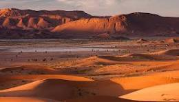

Sand and Silence: The Desert's Endless Horizon
There is nothing as cleansing as the desert. I remember the exact moment the sun hit the horizon, setting these dunes ablaze with a vibrant orange that seemed to burn. This isn't a flat expanse; it’s a sea of sand carved by the wind, rippling into perfect curves in the foreground. Looking further, the landscape rises dramatically into rust-colored rocky mountains, creating a striking contrast between the softness of the sand and the hardness of the stone. In the distance, a bright line—perhaps a salt flat or a dry oasis—adds a touch of mystery. This journey is an invitation to slow down. Come here if you seek absolute silence and a beauty that is both harsh and incredibly delicate. Let the minute-by-minute shifts in light astonish you. It’s a place where you feel small, yet profoundly connected to the Earth’s immensity.
Torna a gli articoli